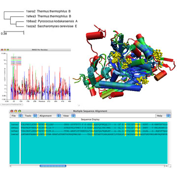

Multiple Alignment aligns multiple proteins of the same structural class using the STAMP program, courtesy of R.B. Russell and G.J. Barton. By utilizing the graphical features of VMD, (i.e. 3D OpenGL Display, Graphical Representations), and its own features, (i.e. Sequence Display, Molecule Coloring, Residue Selection, and Phylogenetic Tree), Multiple alignment explores the sequence and structure of multiple aligned proteins concurrently. The plugin was created primarily to meet the research needs of biomedical scientists desiring "to study the evolutionary changes in sequence and structure of proteins across all three domains of life."
ArticlesThe comparative sequence and structure metrics and analysis tools of Multiple Alignment are availble in the following articles,
Tutorials and Documentation
Please note:
|
 |